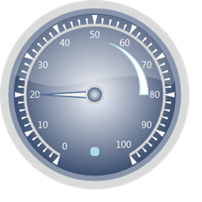
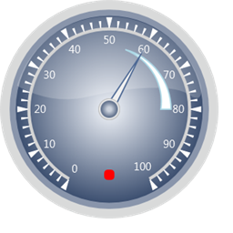

Step 1:
View:
Add the below code in your aspx file.
|
View[ASPX] <%@ Page Language="C#" MasterPageFile="~/Views/Shared/Site.Master" Inherits="System.Web.Mvc.ViewPage" %> <asp:Content ID="Content1" ContentPlaceHolderID="TitleContent" runat="server"> Circular Gauge </asp:Content>
<asp:Content ID="Content2" ContentPlaceHolderID="MainContent" runat="server">
<%--Rendering the Circular Gauge--%> <%=Html.Syncfusion().CircularGauge("Gauge",(CircularGaugeModel)ViewData["GaugeModel"])%>
</asp:Content> |
|
View[cshtml] <div>
@*--Rendering the Circular Gauge--*@ @Html.Syncfusion().CircularGauge("Gauge",(CircularGaugeModel)ViewData["GaugeModel"])
</div> |
Step 2:
Controller:
Add the below code in your controller.
Using the StateIndicator class, Indicator can be created.
And Using StateIndicators collection of CircularGaugeModel class, you can add the Indicator in Circular Gauge.
|
using System; using System.Collections.Generic; using System.Linq; using System.Web; using System.Web.Mvc; using Syncfusion.Mvc.Gauge; using Syncfusion.Mvc.Shared; using System.Windows.Media;
namespace CircularGauge.Controllers { [HandleError] public class HomeController : Controller { public ActionResult Index() { CircularGaugeModel model = new CircularGaugeModel(); model.Radius = 160; model.GaugeSkins = GaugeSkins.VS2010; model.FrameType = GaugeFrameType.CircularWithInnerTopGradient; CircularScale c_Scale = new CircularScale(); c_Scale.Maximum = 100; c_Scale.Minimum = 0; c_Scale.MinorIntervalValue = 2; c_Scale.MajorIntervalValue = 10; c_Scale.GapSweepAngle = 300; c_Scale.Radius = 120; c_Scale.StartAngle = 120; c_Scale.ScaleBarSize = 4.5; c_Scale.PointerCapRadius = 8; c_Scale.BackgroundBrush = Brushes.LightGray;
TickMark _minor = new TickMark(); _minor.TickStyle = TickStyle.MinorTick; _minor.TickWidth = 2; _minor.TickHeight = 9; _minor.TickShape = TickShape.Triangle; _minor.TickPlacement = ScalePlacement.Outside; _minor.Angle = 0; _minor.BackgroundBrush = Brushes.White;
TickMark _major = new TickMark(); _major.TickStyle = TickStyle.MajorTick; _major.TickWidth = 7; _major.TickShape = TickShape.Triangle; _major.TickHeight = 14; _major.TickPlacement = ScalePlacement.Outside; _major.Angle = 0;
GaugeLabelTick c_LabelTick = new GaugeLabelTick(); c_LabelTick.TickStyle = TickStyle.MajorTick; c_LabelTick.FontSize = 16; c_LabelTick.DistanceFromScale = 5; c_LabelTick.TickPlacement = ScalePlacement.Inside; c_LabelTick.Angle = 0; c_LabelTick.BackgroundBrush = Brushes.White; c_LabelTick.IncludeFirstValue = true;
CircularPointer c_Pointer = new CircularPointer(); c_Pointer.PointerLength = 90; c_Pointer.PointerWidth = 12; c_Pointer.BorderWidth = 2; c_Pointer.PointerNeedleType = PointerNeedleType.Needle; c_Pointer.Value = 20; c_Pointer.NeedleStyle = NeedleStyle.Triangle;
CircularRange c_Range = new CircularRange(); c_Range.StartValue = 55; c_Range.EndValue = 80; c_Range.StartWidth = 0; c_Range.BorderBrush = Brushes.LightBlue; c_Range.BackgroundBrush = Brushes.White; c_Range.EndWidth = 15; c_Range.RangePosition = ScalePlacement.Inside; c_Range.DistanceFromScale = 25;
StateIndicator s_Indicator = new StateIndicator(); s_Indicator.IndicatorHeight = 15; s_Indicator.IndicatorWidth = 15; s_Indicator.StateRanges.Add(new StateRange(50, 90)); s_Indicator.Value = 20; s_Indicator.IndicatorStyle = IndicatorStyle.RoundedRectangularLED; s_Indicator.Location = new System.Windows.Point(50, 80); s_Indicator.BackgroundBrush = Brushes.LightBlue; s_Indicator.ActiveBackGroundBrush = Brushes.Red;
c_Scale.Pointers.Add(c_Pointer); c_Scale.Ticks.Add(_minor); c_Scale.Ticks.Add(_major); c_Scale.Labels.Add(c_LabelTick); c_Scale.Ranges.Add(c_Range); model.StateIndicators.Add(s_Indicator); model.Scales.Add(c_Scale); ViewData["GaugeModel"] = model; return View(); }
} } |
Step 3:
Run the code. You will get the below Output for State Indicator InActive State.

Figure 73: State Indicator-Inactive state
 Note: In the above codes, you have mentioned
that the State Range is between (50-90) and the Pointer Value is 20. Hence the
state Indicator is in Inactive state. Now change the Pointer value to 60 and
bind it with state Indicator Value and then see the State Indicator in Active
State. You can see the difference in the color of the Indicator.
Note: In the above codes, you have mentioned
that the State Range is between (50-90) and the Pointer Value is 20. Hence the
state Indicator is in Inactive state. Now change the Pointer value to 60 and
bind it with state Indicator Value and then see the State Indicator in Active
State. You can see the difference in the color of the Indicator.

Figure 74: State Indicator-Active state